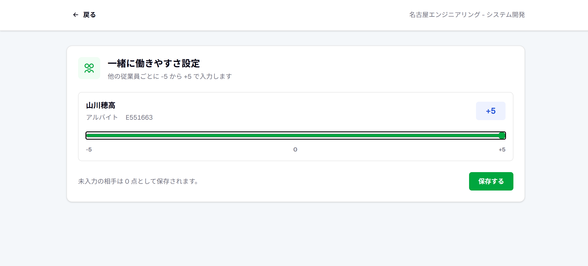
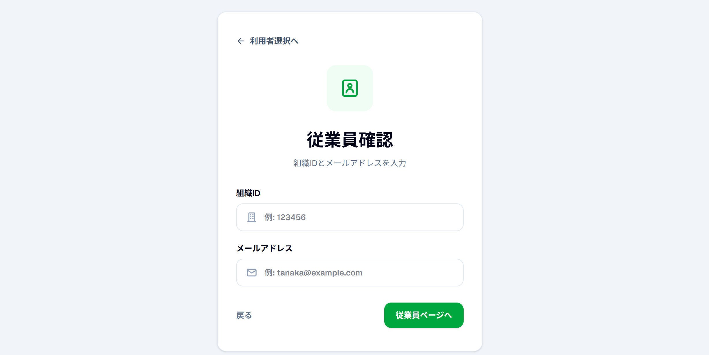
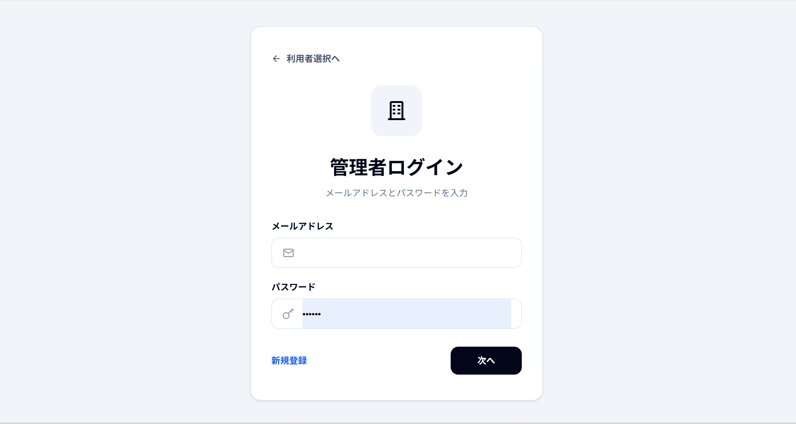
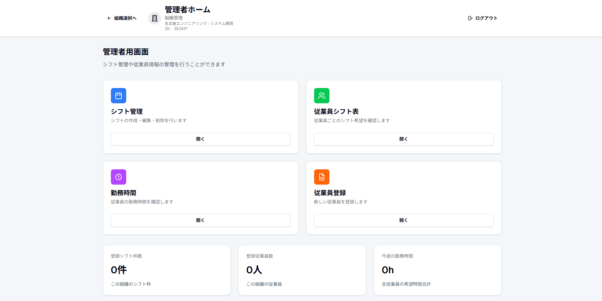
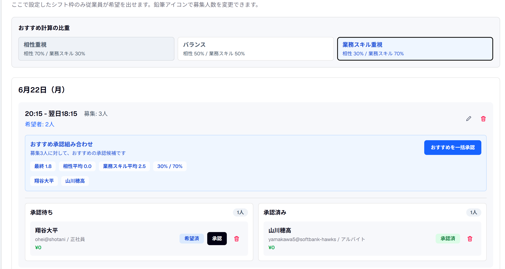
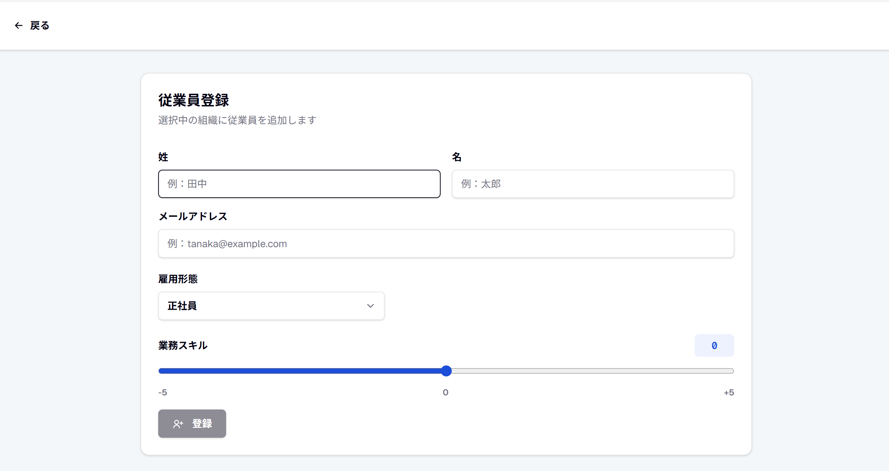
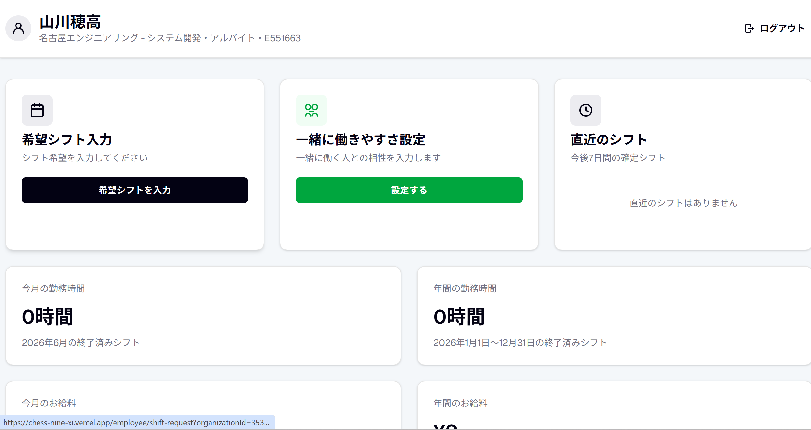
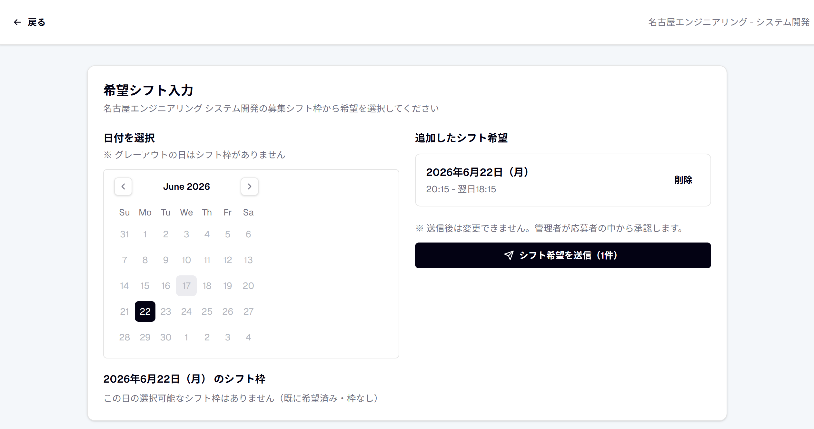

従業員が入力
一緒に入りづらい相手を選択し、理由も任意で入力できます。
Problem
勤務できる日を集めるだけでも大変ですが、実際の現場では 「誰と一緒に入りたいか・入りたくないか」など、人間関係の配慮が必要です。 これらを踏まえたシフト作成は、時間も手間もかかってしまいます。
この人とは少し入りづらい。
でも、直接は言いにくい。
Chessは、こうした想いもシステム上で扱い、 管理者が配慮しやすい形に整理します。
Main Feature
従業員が「一緒に入りづらい相手」などの情報を登録すると、システムが情報を整理。 管理者は、働きやすさと人間関係の両方を考えながら、 バランスの取れたシフト作成ができます。

一緒に入りづらい相手を選択し、理由も任意で入力できます。
システムが希望日と人間関係の情報をまとめて整理します。
配慮が必要な組み合わせを見ながらシフトを調整できます。
Appeal
従業員は自分でパスワードを作ったり、新規登録したりする必要がありません。 管理者が登録したメールアドレスと組織IDを入力して、確認用コードを受け取るだけで すぐに希望の提出が可能です。

名前・メールアドレス・雇用形態を登録します。
組織IDとメールアドレスを入力し、確認用コードで本人確認します。
別途パスワード登録なしで、希望シフト入力へ進めます。
Features
Chessは現在も進化を続けています。以下の機能を中心に、シフト作成をよりスムーズにします。
管理者はメールアドレスとパスワードで登録後、メール認証でログインします。
管理する組織を作成し、組織の切り替えも簡単に行えます。
日付、開始時間、終了時間、募集人数を登録・変更できます。
従業員の希望を一覧で確認し、承認・未承認を管理できます。
従業員ごとのシフト希望や確定状況を一覧で確認できます。
承認済みシフトをもとに、勤務時間を確認できます。
直近のシフト、勤務時間、シフト希望一覧を確認できます。
カレンダーから希望日を選び、募集枠に希望を提出できます。
人間関係を考慮したシフト作成は、Chessの主要な特長です。
Screens
管理者画面と従業員画面の主なイメージをご紹介します。






Flow
Chessを導入してから、シフトを作成・管理できるまでの流れは以下の通りです。
サービスページから内容を確認します。
管理者または従業員を選択します。
日付・時間・募集人数を設定します。
従業員は希望シフトを提出します。
希望を確認し、確定シフトを作成します。
Benefits